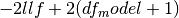
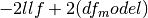
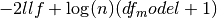
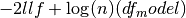

statsmodels.regression.linear_model.RegressionResults¶
-
class
statsmodels.regression.linear_model.RegressionResults(model, params, normalized_cov_params=None, scale=1.0, cov_type='nonrobust', cov_kwds=None, use_t=None)[source]¶ This class summarizes the fit of a linear regression model.
It handles the output of contrasts, estimates of covariance, etc.
Returns: Attributes
aic
Aikake’s information criteria. For a model with a constant . For a model without a constant .
bic
Bayes’ information criteria For a model with a constant . For a model without a constant 
bse
The standard errors of the parameter estimates.
pinv_wexog
See specific model class docstring
centered_tss
The total (weighted) sum of squares centered about the mean.
cov_HC0
Heteroscedasticity robust covariance matrix. See HC0_se below.
cov_HC1
Heteroscedasticity robust covariance matrix. See HC1_se below.
cov_HC2
Heteroscedasticity robust covariance matrix. See HC2_se below.
cov_HC3
Heteroscedasticity robust covariance matrix. See HC3_se below.
cov_type
Parameter covariance estimator used for standard errors and t-stats
df_model
Model degress of freedom. The number of regressors p. Does not include the constant if one is present
df_resid
Residual degrees of freedom. n - p - 1, if a constant is present. n - p if a constant is not included.
ess
Explained sum of squares. If a constant is present, the centered total sum of squares minus the sum of squared residuals. If there is no constant, the uncentered total sum of squares is used.
fvalue
F-statistic of the fully specified model. Calculated as the mean squared error of the model divided by the mean squared error of the residuals.
f_pvalue
p-value of the F-statistic
fittedvalues
The predicted the values for the original (unwhitened) design.
het_scale
adjusted squared residuals for heteroscedasticity robust standard errors. Is only available after HC#_se or cov_HC# is called. See HC#_se for more information.
HC0_se
White’s (1980) heteroskedasticity robust standard errors. Defined as sqrt(diag(X.T X)^(-1)X.T diag(e_i^(2)) X(X.T X)^(-1) where e_i = resid[i] HC0_se is a cached property. When HC0_se or cov_HC0 is called the RegressionResults instance will then have another attribute het_scale, which is in this case is just resid**2.
HC1_se
MacKinnon and White’s (1985) alternative heteroskedasticity robust standard errors. Defined as sqrt(diag(n/(n-p)*HC_0) HC1_see is a cached property. When HC1_se or cov_HC1 is called the RegressionResults instance will then have another attribute het_scale, which is in this case is n/(n-p)*resid**2.
HC2_se
MacKinnon and White’s (1985) alternative heteroskedasticity robust standard errors. Defined as (X.T X)^(-1)X.T diag(e_i^(2)/(1-h_ii)) X(X.T X)^(-1) where h_ii = x_i(X.T X)^(-1)x_i.T HC2_see is a cached property. When HC2_se or cov_HC2 is called the RegressionResults instance will then have another attribute het_scale, which is in this case is resid^(2)/(1-h_ii).
HC3_se
MacKinnon and White’s (1985) alternative heteroskedasticity robust standard errors. Defined as (X.T X)^(-1)X.T diag(e_i^(2)/(1-h_ii)^(2)) X(X.T X)^(-1) where h_ii = x_i(X.T X)^(-1)x_i.T HC3_see is a cached property. When HC3_se or cov_HC3 is called the RegressionResults instance will then have another attribute het_scale, which is in this case is resid^(2)/(1-h_ii)^(2).
model
A pointer to the model instance that called fit() or results.
mse_model
Mean squared error the model. This is the explained sum of squares divided by the model degrees of freedom.
mse_resid
Mean squared error of the residuals. The sum of squared residuals divided by the residual degrees of freedom.
mse_total
Total mean squared error. Defined as the uncentered total sum of squares divided by n the number of observations.
nobs
Number of observations n.
normalized_cov_params
See specific model class docstring
params
The linear coefficients that minimize the least squares criterion. This is usually called Beta for the classical linear model.
pvalues
The two-tailed p values for the t-stats of the params.
resid
The residuals of the model.
resid_pearson
wresid normalized to have unit variance.
rsquared
R-squared of a model with an intercept. This is defined here as 1 - ssr/centered_tss if the constant is included in the model and 1 - ssr/uncentered_tss if the constant is omitted.
rsquared_adj
Adjusted R-squared. This is defined here as 1 - (nobs-1)/df_resid * (1-rsquared) if a constant is included and 1 - nobs/df_resid * (1-rsquared) if no constant is included.
scale
A scale factor for the covariance matrix. Default value is ssr/(n-p). Note that the square root of scale is often called the standard error of the regression.
ssr
Sum of squared (whitened) residuals.
uncentered_tss
Uncentered sum of squares. Sum of the squared values of the (whitened) endogenous response variable.
wresid
The residuals of the transformed/whitened regressand and regressor(s)
Methods
HC0_se()See statsmodels.RegressionResults HC1_se()See statsmodels.RegressionResults HC2_se()See statsmodels.RegressionResults HC3_se()See statsmodels.RegressionResults aic()bic()bse()centered_tss()compare_f_test(restricted)use F test to test whether restricted model is correct compare_lm_test(restricted[, demean, use_lr])Use Lagrange Multiplier test to test whether restricted model is correct compare_lr_test(restricted[, large_sample])Likelihood ratio test to test whether restricted model is correct condition_number()Return condition number of exogenous matrix. conf_int([alpha, cols])Returns the confidence interval of the fitted parameters. cov_HC0()See statsmodels.RegressionResults cov_HC1()See statsmodels.RegressionResults cov_HC2()See statsmodels.RegressionResults cov_HC3()See statsmodels.RegressionResults eigenvals()Return eigenvalues sorted in decreasing order. ess()f_pvalue()fittedvalues()fvalue()get_robustcov_results([cov_type, use_t])create new results instance with robust covariance as default mse_model()mse_resid()mse_total()nobs()resid()resid_pearson()Residuals, normalized to have unit variance. rsquared()rsquared_adj()scale()ssr()summary([yname, xname, title, alpha])Summarize the Regression Results summary2([yname, xname, title, alpha, ...])Experimental summary function to summarize the regression results uncentered_tss()wresid()Attributes
use_t